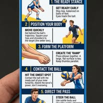

5 стъпки за перфектен пас
1. Готовност
Готовност — ниско, на пръсти, очите следят топката.
2. Позиция
Позиция — застани зад траекторията, хълбоците към разпределителя.
3. Платформа
Платформа — лактите заедно, широка повърхност, палците успоредни.
4. Контакт
Контакт — на предмишниците, абсорбирай силата на сервиса.
5. Насочване
Насочване — леко с рамене и тяло, пасът към разпределителя.